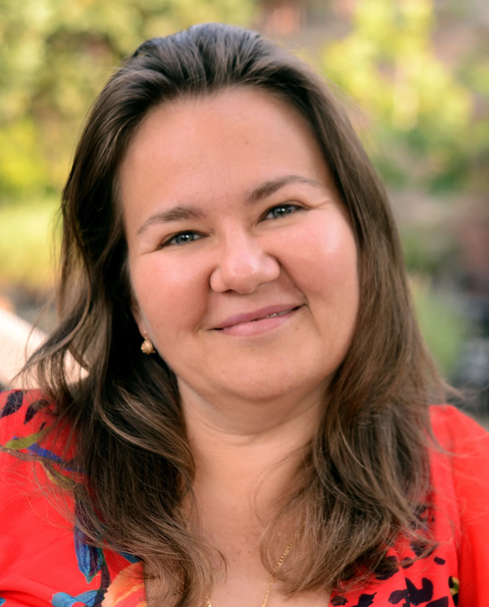
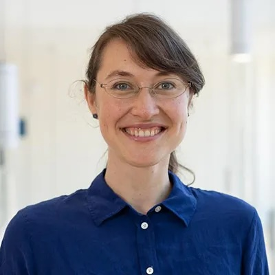
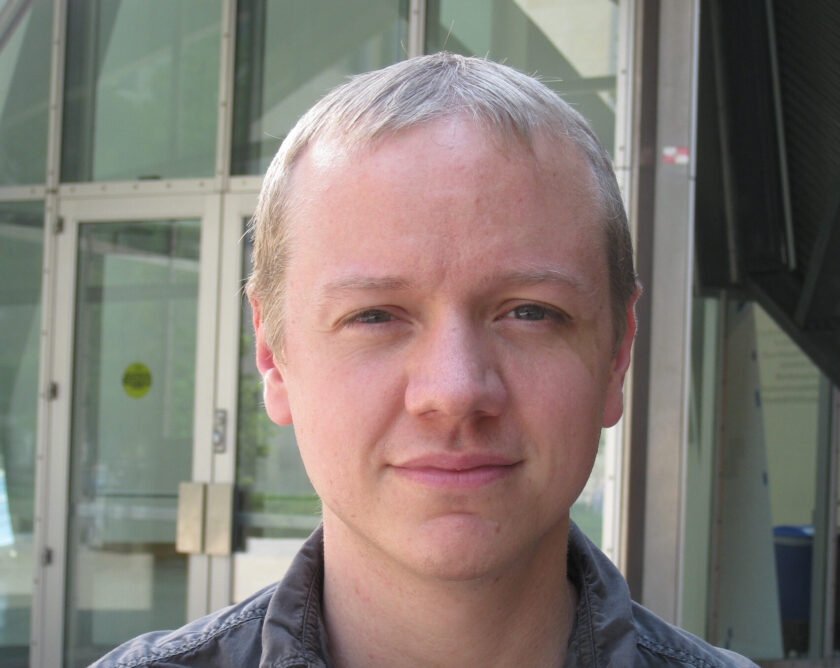
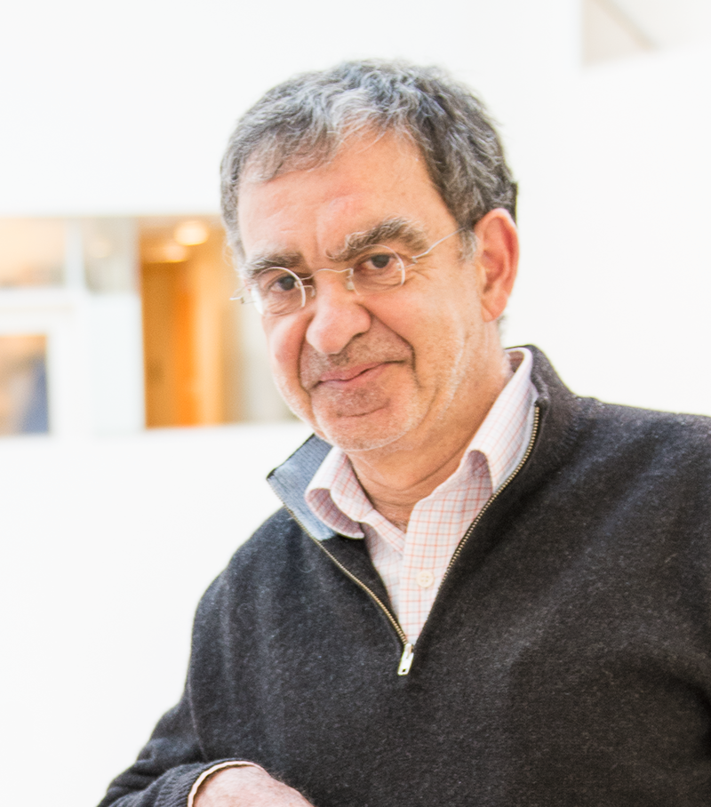
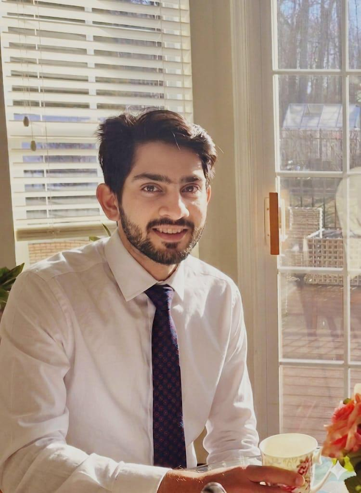
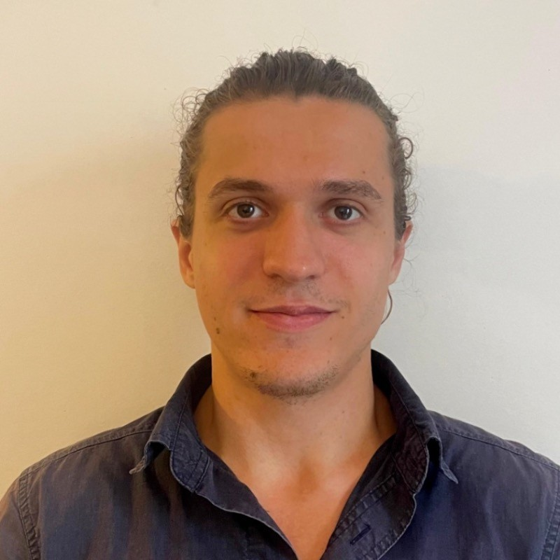
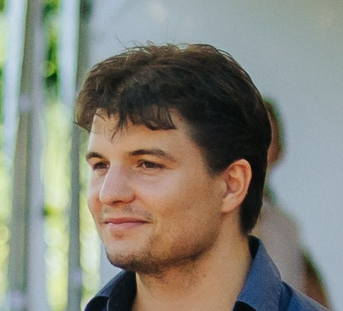
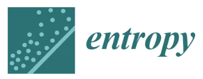
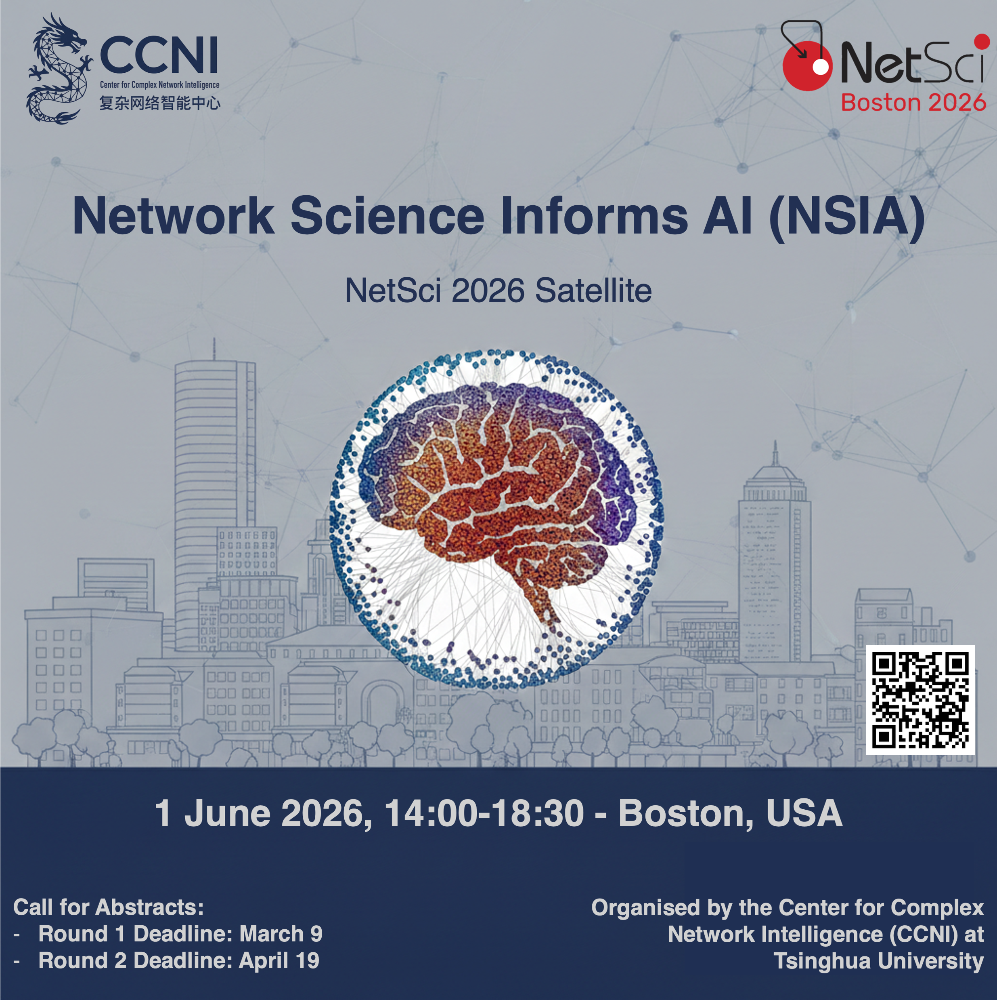
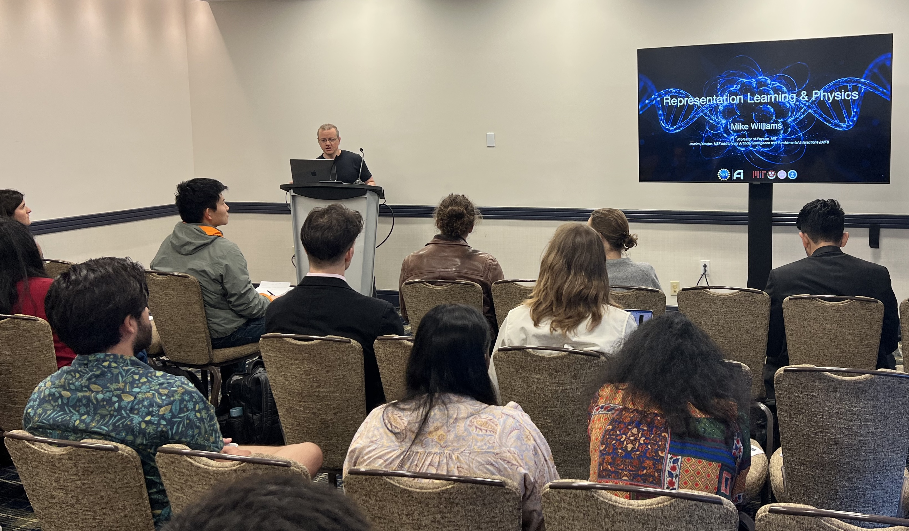

NSIA 2026 Archive
This page archives the inaugural edition of the Network Science Informs AI (NSIA) satellite, held on June 1st, 2026 in Boston, USA as part of NetSci 2026.
Event Details
The event was a great success, featuring a mix of invited speakers and contributed talks. More photos from the event are available here. You can also leave some feedback for the satellite at this form.
Date: Monday, June 1st, 2026
Time: 14:00 – 18:30
Satellite Location: Porter Square B, Hyatt Regency Boston/Cambridge
Poster Session: Amesbury Ballroom, Hyatt Regency Boston/Cambridge
Dinner: Held after the satellite at Amelia's Trattoria.
Organizers: The NSIA 2026 satellite was organized by members of the Center for Complex Network Intelligence (CCNI) from Tsinghua University and was sponsored by SparseMind AI.
#NSIA2026
Invited Speakers (alphabetical order)
Schedule
Date: Monday 1 June 2026, 14:00-18:30
Session I (14:00 - 16:15)
| Time | Title | Speaker | Type |
|---|---|---|---|
| 14:00 - 14:15 | Opening Remarks |
Carlo V. Cannistraci
Tsinghua University
|
Opening |
| 14:15 - 14:45 | Simplicity Within Biological Complexity |
Mohamed Bin Zayed University of Artificial Intelligence (MBZUAI)
|
Invited Talk |
| 14:45 - 15:00 | From Graphons to Graphlets: A Graph-Limit Lens on Sparse Neural Connectivity and Training |
Siddhi Kanta Mishra
University of Central Florida
|
Contributed Talk |
| 15:00 - 15:30 | Smarter and Sparser AI with Complex Network Science |
Helmholtz Center CISPA
|
Invited Talk |
| 15:30 - 15:45 | Emergence of giant component in percolated artificial neural networks |
Adrien Pontlevy
Paris Brain Institute
|
Contributed Talk |
| 15:45 - 16:15 | The Cost of Sharing: From Topological Multitasking Limits to Semantic Horizons |
Northeastern University London
|
Invited Talk |
Coffee Break (16:15 - 16:45)
Poster Session: Amesbury Ballroom | Hyatt Regency Boston/Cambridge
Session II (16:45 - 18:30)
| Time | Title | Speaker | Type |
|---|---|---|---|
| 16:45 - 17:00 | Robustness in sparse artificial neural networks trained with adaptive topology |
Bendeguz Sulyok
Semmelweis University
|
Contributed Talk |
| 17:00 - 17:30 | Representation Learning and Physics |
MIT
|
Invited Talk |
| 17:30 - 17:45 | Task complexity shapes internal representations and robustness in neural networks |
Robert Jankowski
Delft University of Technology
|
Contributed Talk |
| 17:45 - 18:15 | Compositional Sparsity |
MIT
|
Invited Talk |
| 18:15 - 18:30 | Closing Remarks, Voting, and Prizes |
Carlo V. Cannistraci
Tsinghua University
|
Closing |
Slides/Posters
Talks
Invited Talks




Contributed Talks



Posters
Committees
Organizing Committee

Carlo Vittorio Cannistraci
Satellite Chair
Zhou Yahui Chair Professor and Chief Scientist
Director at the Center for Complex Network Intelligence (CCNI), Tsinghua Laboratory of Brain and Intelligence (THBI), Tsinghua University

Thomas Adler
Vice Chair
PhD student
Center for Complex Network Intelligence (CCNI), Tsinghua Laboratory of Brain and Intelligence (THBI), Tsinghua University

Diego Cerretti
Communications and Outreach Chair
Masters student
Center for Complex Network Intelligence (CCNI), Tsinghua Laboratory of Brain and Intelligence (THBI), Tsinghua University

Ilyes Abdelhamid
Postdoc
Center for Complex Network Intelligence (CCNI), Tsinghua Laboratory of Brain and Intelligence (THBI), Tsinghua University
Special Issue Committee

Lock Yue Chew
Guest Editor
Professor, Division of Physics & Applied Physics. Associate Dean (Students), College of Science
School of Physical & Mathematical Sciences, Nanyang Technological University
Technical Program Committee
Program Chairs:
- Carlo Vittorio Cannistraci (NSIA)
- Thomas Adler (NSIA)
- Lock Yue Chew (Special Issue)
Abstract Reviewers:
- Ruben Christon
- Cormac O'Brien
- Jiaqing Lyu
- Diego Cerretti
- Raghav Sharma
- Boyu Su
- Junda Chen
- Kangyou Bao
- Wenqi Gu
- Worawate Ausawalaithong
- Arsham Ghavasieh
- Hanming Li
Call for Abstracts
The call for abstracts is now closed. Thank you to everyone who submitted their work. The satellite was a great success.
Selected abstracts will be invited to contribute to a joint special issue on "Complexity of AI" in the journals Entropy and Complexities.
Topics of Interest
The satellite welcomes submissions on the following topics (not limited to):
- Dynamic sparsity and efficient learning in natural and artificial intelligence
- Topological self-organization in adaptive complex systems
- Complex network intelligence
- Epitopological learning
- Network automata learning rules and plasticity mechanisms
- Brain-inspired sparse neural architectures
- Emergent intelligence properties in network-based artificial complex systems
- Higher-order interactions and learning in natural and artificial intelligent systems
- Network geometry and representation learning
- Non-Euclidean spaces for deep learning
- Network Science for AI & AI for Network Science
We especially encourage submissions on novel and original topics that bridge network science and artificial intelligence.
Important Dates
To align with the NetSci early bird deadline, we will use two submission rounds: Round 1 confirms abstract acceptance (without talk/poster designation), and Round 2 assigns talks vs. posters; new submissions are still welcome after Round 1. (AoE - Anywhere on Earth):
February 12 (AoE): Call for abstracts opensMarch 9 (AoE): DEADLINE: Round 1 submissionMarch 17 (AoE): Notification of accepted abstracts - Round 1March 27: NetSci 2026 early bird registration deadlineApril 19 (AoE): DEADLINE: Round 2 submissionMay 10 (Previously April 28) (AoE): Notification of accepted talks and posters - Round 2May 20 (AoE): Final submission of poster/talk.June 1: NSIA Satellite 2026.June 1-5: NetSci 2026.
Submission Format
Abstract Format: One-page abstract (in PDF format) submitted anonymously. Your abstract may include one figure or table if needed. It MUST also include a small paragraph that directly argues why this paper is relevant to NSIA (doesn't count towards the one page limit).
Review Process: Double-blind peer review through OpenReview platform. We aim to have a minimum of three reviewers per submission, giving a score of 3 for talk, 2 for poster, and 1 for rejection.
Accepted Format: Accepted talks will be 15 minutes (10 minutes for the talk, and 5 minutes for questions).
Poster Size: Poster boards are 48" wide x 36" tall (landscape orientation). Your poster should be smaller than these dimensions. Mounting material will be provided.
Prizes: There will be a certificate for best poster and the best contributed talk.
Submission Eligibility
The satellite does not have archival proceedings. Therefore, we welcome submissions that are recently published, under peer review, or works in progress.
Special Issue
Complexity of AI - Joint Special Issue in Entropy and Complexities
Selected abstracts accepted at the NSIA 2026 satellite will be invited to contribute to a joint special issue "Complexity of AI", which is guest edited by Dr. Siew Ann Cheong (NTU), Dr. Ling Feng (A*STAR), and Dr. Lock Yue Chew (NTU) for the open access journals Entropy (ISSN 1099-4300, IF 2.0) and Complexities. This special issue will feature papers exploring the complexity of AI models from diverse perspectives, including methods, theories, applications, and empirical studies. You can find the full scope of the special issue for Entropy and Complexities.
Topics covered include:
- Emergence and phase transitions in AI/ML models
- Statistical mechanics of neural networks
- Dynamics of neural networks training and inference
- Power laws in AI/ML models
- Self organization in neural networks
- Energy based models and analysis
- Reinforcement learning in multi-agent systems
- Adaptive and causal ML and AI
This Special Issue is organized in conjunction with the Focused Session entitled "Complexity of AI" at the Asia-Pacific Summer School and Conference on Networks and Complex Systems (APCNCS) 2026, held in Singapore.

Media
The flyer used to promote NSIA 2026, shared with the hashtag #NSIA2026.


Event Photos


